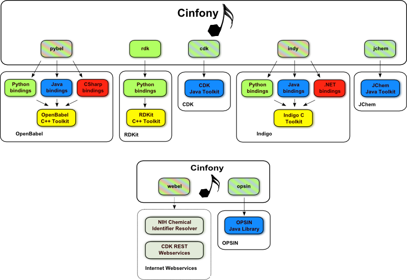

Cinfony¶
Cinfony presents a common API to several cheminformatics toolkits. It uses the Python programming language, and builds on top of Open Babel, RDKit, the CDK, Indigo, JChem, OPSIN and cheminformatics webservices.
It’s open source so you can install it now for free on Windows or Linux. Or you can use it online through the Interactive Cheminformatics Tutorial (Windows only). If you want to hack on it, fork it on Github.
Documentation¶
- Announcement of Cinfony 1.0, 1.1, 1.2
- A presentation giving an overview of Cinfony 1.0 (from the 239th ACS National Meeting, San Francisco, March 2010).
- A presentation giving an overview of Cinfony 1.1 (from Molecular Informatics Open Source Software “MIOSS”, EBI, Hinxton, May 2011).
- How to use Cinfony
- API documentation. This documentation can also be accessed using the help command, e.g.
help(cdk). - The Cinfony paper (Open Access). Please cite N.M. O’Boyle, G.R. Hutchison, Chem. Cent. J., 2008, 2, 24 to support continued development of Cinfony.
- Further information on Pybel and using the Open Babel Python bindings is available as part of the Open Babel documentation
- A blog post describing the webel module
Example¶
Here’s a short example to get the juices flowing. Let’s read an IUPAC name with OPSIN, use Webel to find out its offical IUPAC name, draw it with Indigo, calculate its fingerprint with the RDKit, calculate descriptor values with the CDK, and write it out as an SDF file using Open Babel:
C:\> cinfony # Set environment variables
C:\> python
Python 2.6.4 (r264:75708, Oct 26 2009, 08:23:19) [MSC v.1500 32 bit (Intel)] on
win32
Type "help", "copyright", "credits" or "license" for more information.
>>> from cinfony import obabel, rdk, cdk, indy, opsin, webel
>>> opsinmol = opsin.readstring("iupac", "2,4,6-trinitrotoluene")
>>> opsinmol.write("smi")
'[N+](=O)([O-])C1=C(C(=CC(=C1)[N+](=O)[O-])[N+](=O)[O-])C'
>>> webel.Molecule(opsinmol).write("iupac")
'2-Methyl-1,3,5-trinitrobenzene'
>>> indy.Molecule(opsinmol).draw(filename="indy.png", show=False)
>>> rdk.Molecule(opsinmol).calcfp().bits
[4, 11, 13, 16, 19, 24, 32, 33, 35, 40, 47, 53, 56, 62, 68, 71, 78, 94, 97, 102,
...
1969, 1972, 1979, 1985, 1990, 1992, 2004, 2010, 2016, 2021, 2023, 2028, 2034]
>>> cdkdescs = cdk.Molecule(opsinmol).calcdesc()
{'WHIM.13': nan, 'kierHallSmarts.49': 0, 'kierHallSmarts.48': 0, 'BCUT.4': 3.783
4783086527555, 'BCUT.5': 8.8565180117573092, ...}
>>> obabelmol = obabel.Molecule(opsinmol)
>>> obabelmol.make3D()
>>> obabelmol.title = "TNT"
>>> obabelmol.data.update(cdkdescs)
>>> obabelmol.write("sdf", "TNT.sdf")